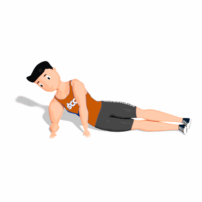

Prancha Lateral

Esse exercício trabalha melhor os músculos oblíquos, que ficam localizados na parte lateral da barriga. Além disso, a prancha lateral é feita em isometria. Portanto, é possível ativar profundamente a musculatura do tronco, que é responsável pela manutenção da postura, principalmente do transverso abdominal.
Ficha Técnica
Tipo: Funcional
Grupo Muscular: Abdome
Aparelho: Nenhum
Músculos: Nenhum
Como realizar
- Deite-se do lado direito, pernas estendidas e empilhadas do quadril aos pés. O cotovelo do seu braço direito está diretamente abaixo do seu ombro;
- Verifique se a sua cabeça está diretamente alinhada com a coluna e seu braço esquerdo com o lado esquerdo do seu corpo;
- Envolva os músculos abdominais, puxando o umbigo em direção à coluna;
- Em seguida, levante os quadris e joelhos do tapete enquanto expira. Mantenha a posição;
- Logo após as respirações, inspire e retorne à posição inicial;
- Mude de lado e repita.
 RC STORE
RC STORE